В версии 2.2 на одном чертеже можно разместить несколько проектов.
Эти проекты представляют собой абсолютно независимые друг от друга обычные проекты, каждый со своим
контуром и узором. Единственное, что их объединяет - это то, что они размещены на
одном чертеже. Разумеется, каждый из них можно открыть и отредактировать отдельно от других.
Допустим, вам нужно нарисовать такой рабочий проект:
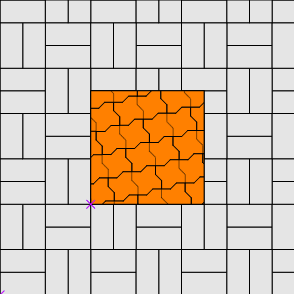
Здесь ДВА проекта.
| 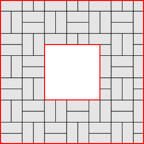 |
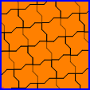 |
| Первый - внешний квадрат | Второй - внутренний |
Это означает, что надо нарисовать в одном проекте ВСЕ границы внешнего квадрата (обозначены красным),
а вдругом прокте - ВСЕ границы внутреннего (обозначены синим).
Все размещённые на чертеже проекты объединены в
набор. В наборе можно переключаться между
проектами. Текущий выбранный проект становится
активным. Его можно редактировать. Остальные
в это время недоступны для редактирования.
Рассмотрим наш пример. Поскольку на чертеже могут быть размещены несколько проектов, то при рисовании
сложных рабочих проектов можно создать один базовый проект, который будет служить базой для рисования остальных
проектов. В нашем случае базовый проект может быть вот таким:
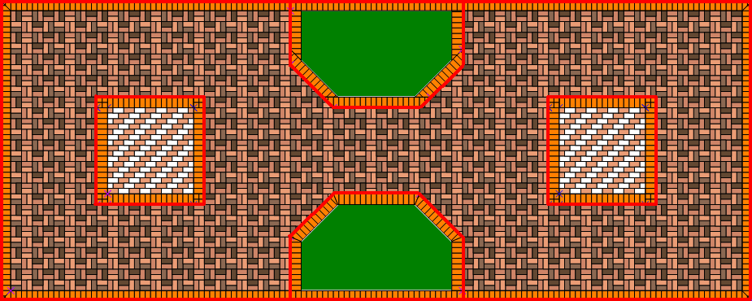
Прежде всего следует установить удобные
размеры чертежа. Дальше в примерах масштаб установлен в "1".
Начинаем рисовать. На тулбаре нажимаем кнопку
Новый 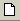. В редакторе проектов создаётся новый
проект "Безымянный". Он добавляется в набор проектов, который пока состоит только из него одного:
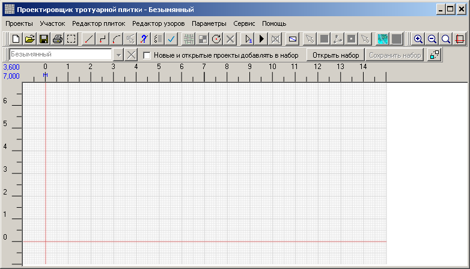
Обратите внимание, что на тулбаре стали доступны остальные кнопки.
Нарисуем базовый проект. Рисование подробно описано в
справочном руководстве.
В версии 2.2 можно также рисовать
с помощью диалога.
Сохраним базовый проект под именем "макет".
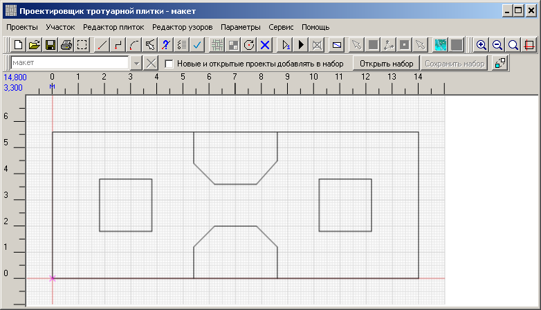
Теперь по макету будем создавать
окантовки внешних границ
рабочего проекта, квадратов и газонов.
Каждая линия окантовки - это отдельный проект, который при создании добавляется в набор проектов.
С окантовками рабочий проект выглядит так:
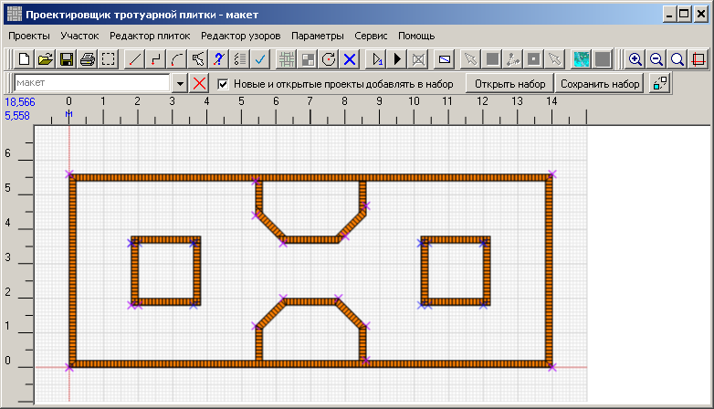
А так выглядит набор проектов:
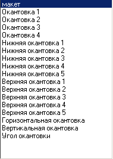
Теперь пора заполнить рабочий проект плиткой. Учитывая, что сказано в начале этой главы про границы проектов,
нарисуем
проект внутреннего пространства и заполним его плиткой.
Работая с несколькими проектами на одном чертеже нужно внимательно следить, какой проект сейчас
является активным. Есть риск начать рисовать не в том проекте. Так, окантовки мы создавали на проекте
"макет". Если не создать новый проект для внутреннего пространства, то запросто можно начать рисовать
прямо в "макете". Поэтому,
не забываем создавать новые проекты для отдельных частей рабочего проекта!
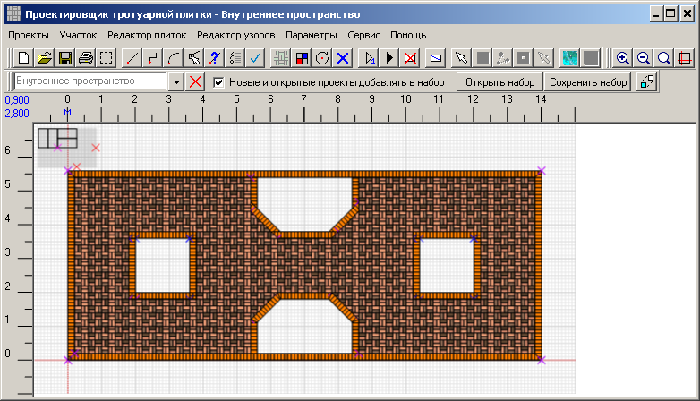
Также нужно сохранять набор проектов после завершения очередного проекта. Допустим, после создания окантовок
мы сохранили набор проектов под именем "Урок 1". Затем нарисовали проект "Внутреннее пространство", как
на рисунке выше. И решили устроить перерыв в работе, закрыли программу.
Когда нужно продолжить работу над рабочим проектом, просто открываем набор проектов. Нажимаем кнопку
"Открыть набор" и выбираем файл "Урок 1". Получаем макет с окантовками, но без внутреннего пространства -
ранее мы забыли сохранить набор после того, как добавили "Внутреннее пространство":
Это легко исправить. Отмечаем "Новые и открытые проекты добавлять в набор" и просто открываем
проект "Внутреннее пространство". Теперь всё выглядит как и должно.
Теперь нужно сохранить набор - мы только что добавили в него проект "Внутреннее пространство". В следующий
раз откроется всё вместе.
Создаём проект для заполнения
квадратов. Рисуем квадраты.
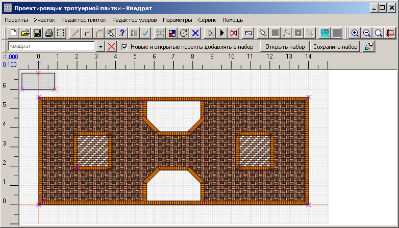
И опять сохраняем набор.
Итак, работая с несколькими проектами на одном чертеже нужно придерживаться следующего порядка действий:
- Создать новый проект
- Нарисовать проект
- Сохранить проект
- Сохранить набор проектов
- Перед изменением проекта убедиться, что активным является тот проект, который собираемся менять.
Ненужный проект можно удалить из набора. Для этого его нужно сделать активным
и нажать кнопку "Удалить из набора" справа от списка набора проектов.
И сохранить набор проектов.
Переходим к финальной обработке рабочего проекта.